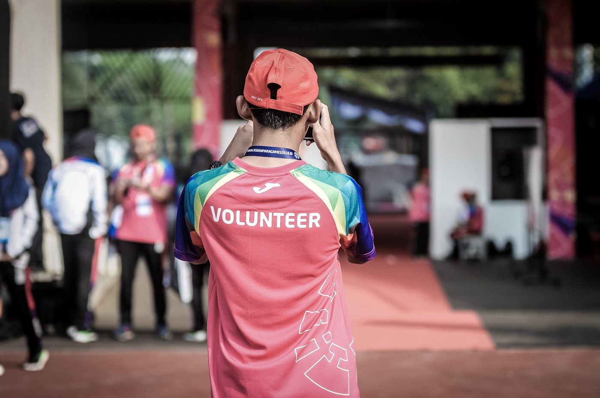

Asociație verificată ANAF
Dăruim
unde doare.
Mergem
până la ușă.
Suntem Hoinarii din Târgu Neamț — mergem la case de copii, la oameni cu sănătate precară și familii vulnerabile. Ducem produse, articole și necesități — în limita în care ne încadrăm, dar cu inima toată. Filantropie pe bune, nu pe hârtie.
54680070CUI • ASOCIAȚIA HOINARII
RO22 BTRLBanca Transilvania • RON
1650/AONG Neamț

♥ Mergem la case de copii & familii
📦 Produse • Articole • Necesități
Următoarea vizită: case de copii Neamț
Înscrie-te voluntar pe Facebook ↗
Înscrie-te voluntar pe Facebook ↗